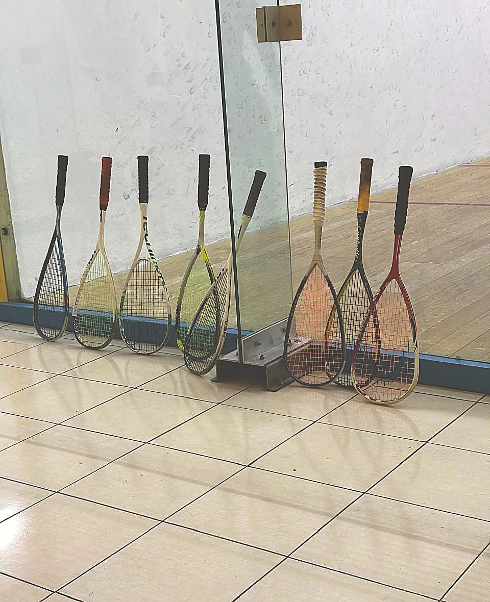

Renta de cancha
Por hora, solo o con quien tú quieras. $300 prepagada · $330 casual.
Tres canchas inglesas de duela y vidrio en Coapa. Nada de membresías ni vueltas: escribes por WhatsApp, apartas tu hora y juegas. Si vas empezando, Don Roger te presta raqueta y te da tips.


Aquí no hay lujos de más: hay duela en buen estado, vidrio en la pared trasera y gente que juega en serio.
Todo se aparta por WhatsApp — cancha, clase o lugar en la retadora.
Por hora, solo o con quien tú quieras. $300 prepagada · $330 casual.

Particulares y de iniciación, todos los niveles. Raqueta de cortesía si vas empezando.

Retadoras lunes y miércoles 7:00 PM. Dos torneos al año; el de aniversario, en agosto.

Raquetas, grips, pelotas, calcetas, bandas y servicio de encordado.
Precios por escrito, sin letras chiquitas.
$300 MXN
Aparta y paga por adelantado. La opción de los que ya juegan cada semana.
Reservar$330 MXN
Llegas, pagas y juegas. Ideal para conocer el club o jugar de vez en cuando.
ReservarRetadoras: L y M · 7:00 PM
★★★★★
"Lugar muy limpio. Muy buen servicio y atención del Sr. Rogelio. Tres canchas y baño con regadera."Loreley Campos
★★★★★
"Excelente lugar para practicar este deporte. Piso de duela, limpieza y buen ambiente. Grandes partidos."Felipe Maldonado
★★★★★
"Excelente servicio con Don Roger. Canchas en buen estado. Gran ambiente deportivo."Luis Ignacio Plascencia
★★★★★
"Muy buen lugar y muy buena atención por parte de Roger."Angel Ramírez
Escríbenos por WhatsApp y aparta tu hora. Así de fácil.
Reservar por WhatsApp